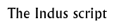

Discussion 6  |
|
Objectives: To introduce pupils to the Indus script
Materials: A chalkboard or large paper to write examples on. Photographs of objects showing Indus seals.
Class set-up: Whole group discussion
Vocabulary: Script, pictograph, phonogram
Discussion: Begin by discussing the importance of writing as a means for record keeping and communication. Why is writing important? How is writing used?
Introduce and define the word script. Explain how a script is different from a language. Give an example of how the same script can be used to record different languages, such as how the Roman script is used to record English, French, Spanish, etc.. Ask pupils to think of other scripts used around the world. Discuss how scripts are different. What is a script? What is the difference between a script and a language? What other kinds of scripts can you think of that are used around the world today? Explain how scripts are different, giving examples of scripts from around the world.Show pupils photographs of objects with Indus script on them. Ask pupils to describe what the script looks like. Introduce the structure of the Indus script, emphasizing that it is probably not picture writing.Wrap up the discussion by showing pupils photographs of Indus script. You could also give a brief explanation of how scholars are working on deciphering the Indus script. Background information:
How to decipher an unknown scriptSeals Writing Trade
© The British Museum |